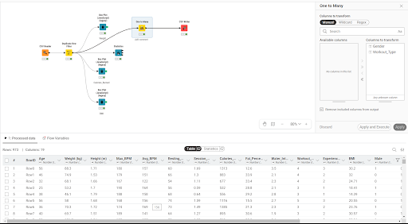
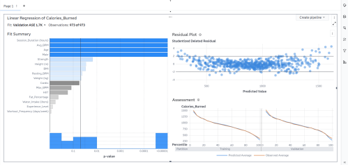
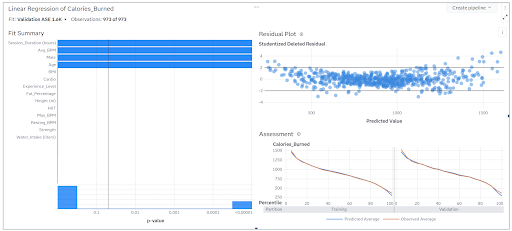

Predictive Analysis of Gym Member Calorie Expenditure
This project explored how gym-member characteristics and exercise activity relate to calories burned per session. I prepared the dataset, compared predictive models and refined the Linear Regression model in SAS Viya.
My contribution
I cleaned and transformed the data, investigated duplicate records, encoded categorical variables, developed and evaluated the models, and interpreted the findings for recommendations. KNIME was used for preparation, with modelling and evaluation in SAS Viya.

Data Preparation Using KNIME
I cleaned and transformed the gym-member exercise data, investigated duplicate records and encoded categorical variables before modelling. The report records 4,865 source rows reduced to 973 unique records after duplicate handling.
KNIME · Data preparation
Final Linear Regression Model in SAS Viya
The full model predicted Calories_Burned using a 70/30 training-validation split. The Fit Summary highlighted Session_Duration, Avg_BPM, Age and Male among the most significant predictors; the report gives R² = 0.9798 and Validation ASE = 1.7K for this full model.

Model Refinement Through Backward Selection
Backward selection progressively removed less significant predictors using a 0.01 significance level. The report says the refined model retained Session_Duration, Avg_BPM, Male and Age, with Validation ASE of 1.6K, compared with 1.7K for the full model.
SAS Viya · Refined model · Validation ASE 1.6K